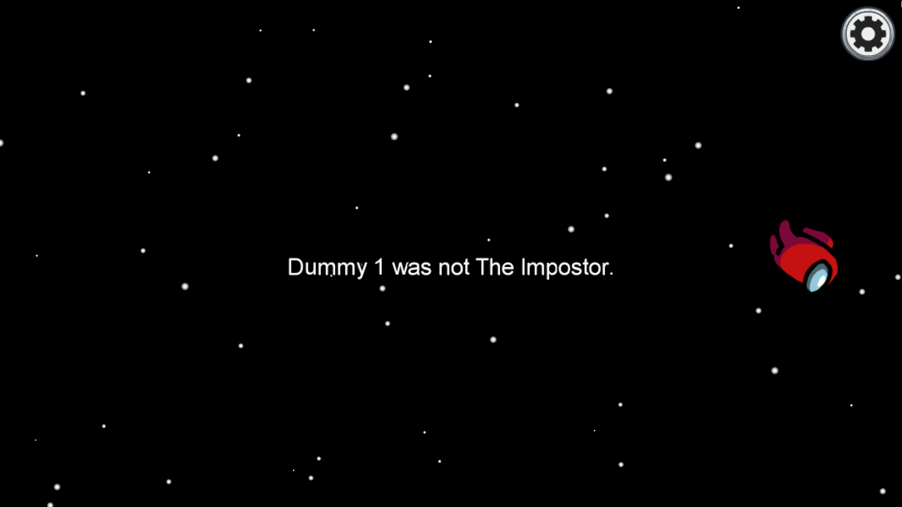

Detective Journey
People become suspicious of you since you instigated to vote the wrong
person and also found the body. They believe there is a chance you
killed and reported the body after the murder.

Keep investigating till you find the imposter
Give up being a detective and just do your tasks